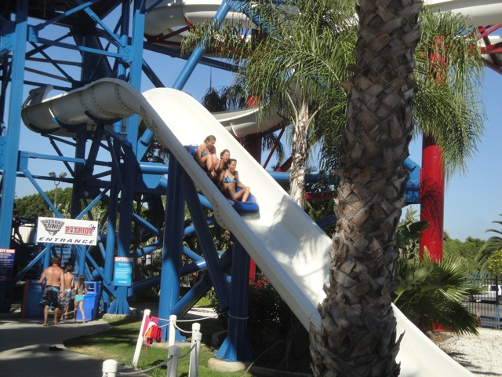
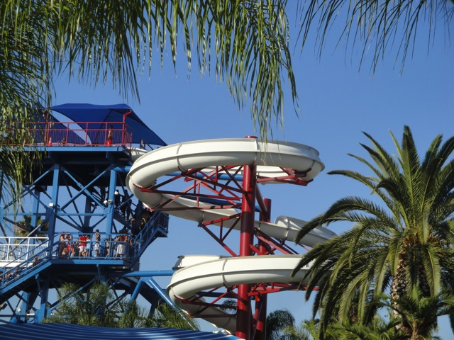
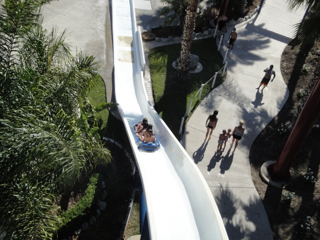
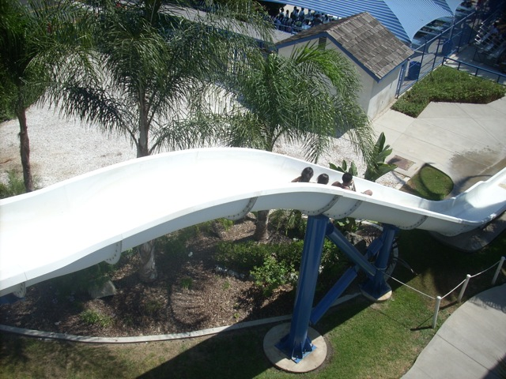
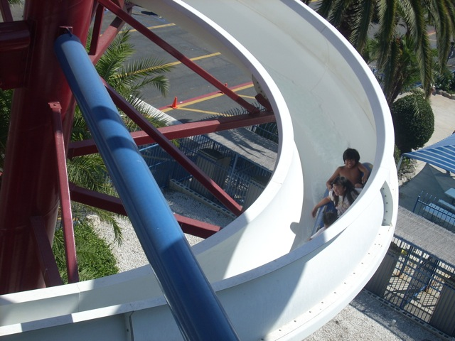
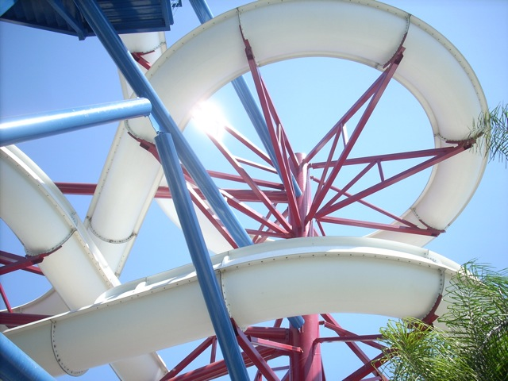
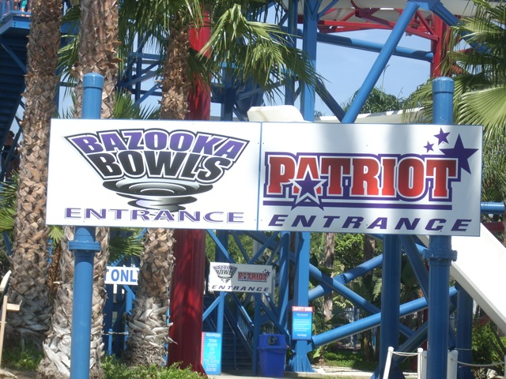

| |
Boomerang Review

Now this ride is located at Cultus Lake Adventure Park, however, I last rode it at its old home park, Wild Rivers. Today, we're reveiwing Boomerang (formally known as Patriot). Now while I may have bashed Boomerang sometimes in the past, I do not in any way consider it to be a bad waterslide. It was just not nearly as good as the other slides in its former home at Wild Rivers, like Bombay Blasters or Bazooka Bowls (which also found its new home at Cultus Lake, so that point still stands). Hell, in some ways, it reminds me of Surf Rider Rapids with a half pipe slapped onto the chute. Anyways, as you walk up to the complex, when you get up to the top of the slide, we are handed a tube from the tube lifthill. We set the tube in the slide, get in it, and wait for the go. When we're clear, the lifeguard will open the gate and we're off. It starts out with a few small slow helixes, but the more we go through in the slide, the faster we seem to be going. Finally, after lots of twisting around and gaining some speed, we head down the final drop. We giggle like schoolgirls down the final drop. But it's not over yet. We fly throgh the chute and go up into a halfpipe. A very rare thing for a slide to do (with the obvious exception of Half Pipe Slides). How high you go up the half pipe will depend on how much weight in your raft. When it was just me riding with Cody, we never got very far on the half pipe before falling back down. But when Cody, Alex, William and I rode it in 2011, we were already going flying down before the half pipe, and we all lifted up on the drop, providing us with some serious airtime. Not only did we fly up the half pipe, but we even went back up the main drop a little. Now that's how you ride Boomerang. Anyways, Boomerang a very fun slide. While it wasn't super intense like Bombay Blasters and Bazooka Bowls, it's still a lot of fun. It's worth a ride if you're in the park.
7/10
Location: Cultus Lake Adventure Park
I'm not sure when Boomerang opened up at Wild Rivers
Boomerang was relocated to Cultus Lake in 2013
Built by: ???
Last Ridden: July 18, 2011
Patriot Photos









Home
|